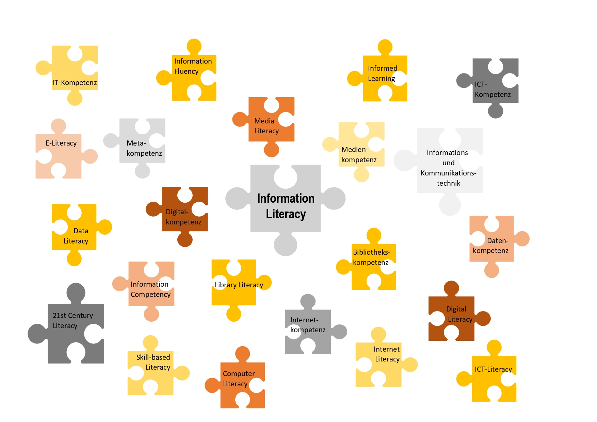

1970er
1970er: Ursprung in der Bibliothekswissenschaft
Im bibliothekarischen Bereich wurden seit den 1970er die Begriffe „Library Instructions“ und „Bibliographic Instructions“, erst später „Information Literacy“ verwendet. Diese Begriffe bezeichnen die Tätigkeit von Bibliothekar:innen, Benutzerschulungen abzuhalten, die über die wissenschaftliche Informationsbeschaffung sowie den Umgang mit Informationen aufklären (Ingold, 2005).
Bibliotheken stellen also nicht nur den Zugang zu Informationen, sondern haben auch eine Bildungsfunktion inne.
1974: Information Literacy nach Paul Zurkowski
Der Begriff “Information Literacy” tauchte das erste Mal 1974 im Zusammenhang mit Paul Zurkowski, dem damaligen Präsidenten der „Information Industry Association“ (IIA), auf (Badke, 2010; Ingold, 2012). In einem Bericht für die „National Commission on Libraries and Information Science“ (NCLIS) definierte Zurkowski den Begriff als eine Fähigkeit, jegliche Informationswerkzeuge und -quellen so zu nutzen, dass sie berufliche Entscheidungen und Problemlösungen erleichtern (Ingold, 2012). Nach Zurkowski sollte jeder US-amerikanische Bürger diese Fähigkeit im beruflichen Kontext besitzen, damit die nationale Wirtschaft konkurrenzfähig bleibt (Zurkowski, 1974; Horton, 2008).
1980er
1989: American Library Association Information Literacy
Die meisten Definitionen gründen auf der Definition der „American Library Association Information Literacy“ (ALA), ein Komitee aus Vertretern des Bildungs- und des Bibliotheksbereiches. Nach der ALA ist „Information Literacy“:
„[the ability] to recognize when information is needed and […] to locate, evaluate, and use effectively the needed information […] for any task or decision at hand […]”
American Library Association, 1989, S. 1
Demnach ist “Information Literacy” eine Fähigkeit, zu erkennen, wann Informationen benötigt werden, und diese zu finden, zu evaluieren und zu nutzen, um Aufgaben zu bewältigen und Entscheidungen zu treffen. Diese Definition bildet die Grundlage für viele, folgende Definitionen von „Information Literacy“, sowohl im deutschsprachigen als auch im anglo-amerikanischen Sprachraum.
1990er
1990er: „Informationskompetenz“ in Deutschland
In den 1990er Jahren fasste der Begriff „Information Literacy“ auch in anderen Ländern Fuß. Dabei entwickelte sich in Deutschland ausgehend von der amerikanischen Auffassung der „Information Literacy“ der Begriff der „Informationskompetenz“ als Synonym (Ingold, 2012).
Heute
2015: Eine von vielen Definitionen
Eine relativ aktuelle Definition liefert Mayer (2015):
Das Konzept schließt zahlreiche kognitive, metakognitive, sozial-kommunikative und emotional-motivationale Fähigkeiten, Fertigkeiten und Wissensbestände ein, die es erlauben, einen Informationsbedarf zu erkennen und diesen im Zuge von Prozessen der Suche, Bewertung, Integration und Präsentation von Informationen unter Beachtung ethischer, rechtlicher und (fach-) konventioneller Rahmenbedingungen zu befriedigen.
Mayer, 2015, S. 10
Obwohl sich die meisten Definitionen des Begriffs - wie auch die von Mayer - inhaltlich auf die Definition der American Library Association Information Literacy aus dem Bibliotheksbereich beziehen, gibt es heute je nach Autor, Disziplin und Forschungsbereich unterschiedliche Auffassungen und Bezeichnungen von Informationskompetenz (Gapski & Tekster, 2009). Zudem stellt Informationskompetenz einen Begriff dar, der sich - bedingt durch Faktoren wie Digitalisierung und Veränderung der Informationsumwelt - in den vergangenen Jahren weiterentwickelt hat (Gapski & Tekster, 2009). Heute werden dadurch viele Begriffe synonym gebraucht oder können nicht mehr klar voneinander abgetrennt werden (z.B. Informationskompetenz und Medienkompetenz), sodass eine verwirrende Begriffslandschaft entsteht (Gapski & Tekster, 2009; Ingold, 2012). Folgende Abbildung soll einen groben Überblick über die heutige, uneindeutige Begriffsvielfalt bieten:

Abbildung 1: Begriffslandschaft "Informationskompetenz"